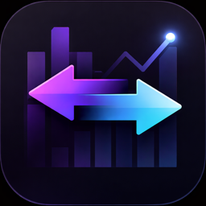
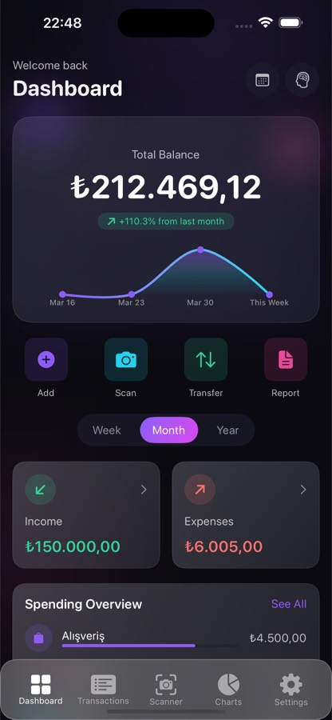
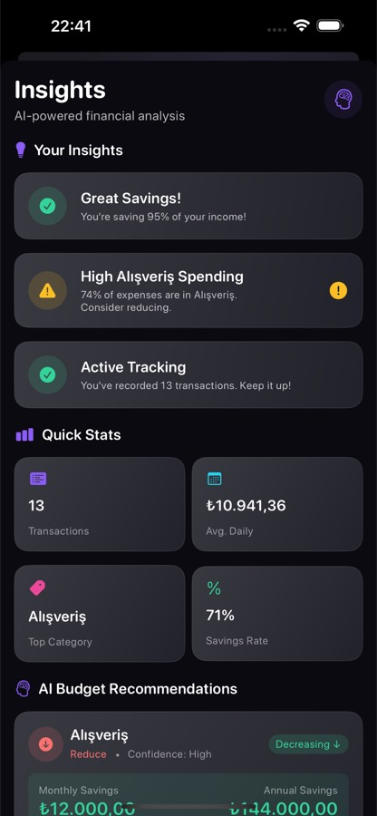
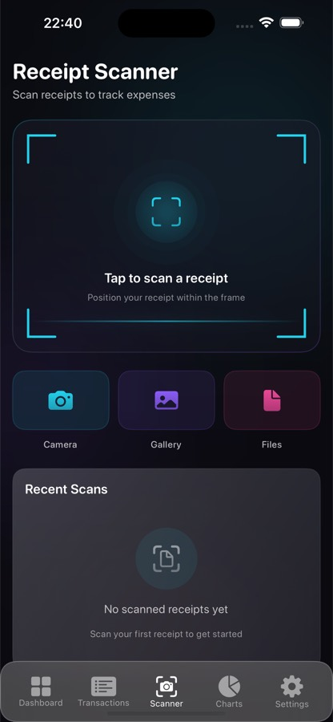

Home / Finance Tracker / Support

Finance Tracker
Support
Get Finance Tracker



Legal: Privacy Policy · EULA
Questions about Finance Tracker, or found a problem? Email us. We usually reply within 1–2 business days.
financetracker.ask.me@gmail.com
Please include your iPhone or iPad model, its iOS version, the app version, how you sign in (Apple, Google or email) and the steps that lead to the problem. Never send passwords or full card numbers.
Frequently asked questions
- Where is my data stored?
- On your device. If you sign in with Apple, it syncs through your own iCloud account. If you sign in with Google or email, it syncs through Firebase. Details are in the Privacy Policy.
- My transactions are missing on a new device.
- Sign in with the same method you used before (Apple, Google or email). Your data syncs from the cloud after you sign in. If you sign in with Apple, check that iCloud is turned on for your device.
- What happens when I sign out?
- Sign Out deletes the data stored on that device, including transactions and receipts. Your cloud copy is kept and comes back when you sign in again.
- How do I delete my account and data?
- Use Delete Account in the app's settings. If you can't, email us from the address linked to your account and we'll help.
- I bought Premium but don't see it on my new device.
- Open the app's settings and tap Restore Purchases. Make sure you're signed in to the App Store with the Apple Account you used to buy it.
- How do I cancel my subscription?
- Go to Settings → [your name] → Subscriptions on your iPhone or iPad. Deleting the app does not cancel a subscription.
- How do I stop personalised ads?
- Turn off tracking for the app under Settings → Privacy & Security → Tracking. You'll still see ads in the free version, but they won't be personalised.
- How do I get a refund?
- Purchases are handled by Apple. Request a refund at reportaproblem.apple.com.
Troubleshooting
- Update to the latest version from the App Store.
- Check your internet connection if syncing seems stuck; your data is saved on the device in the meantime.
- If receipt scanning doesn't read the text well, use good light and keep the receipt flat and fully in frame.
- Close the app completely and open it again, or restart your device.
Finance Tracker — Destek
Finance Tracker hakkında bir sorunuz mu var ya da bir sorun mu buldunuz? Bize e-posta gönderin. Genellikle 1–2 iş günü içinde dönüş yapıyoruz.
financetracker.ask.me@gmail.com
Lütfen iPhone ya da iPad modelinizi, iOS sürümünüzü, uygulama sürümünü, nasıl giriş yaptığınızı (Apple, Google ya da e-posta) ve soruna yol açan adımları yazın. Şifre veya kart numarasının tamamını asla göndermeyin.
Sık sorulan sorular
- Verilerim nerede saklanıyor?
- Cihazınızda. Apple ile giriş yaptıysanız kendi iCloud hesabınız üzerinden, Google ya da e-posta ile giriş yaptıysanız Firebase üzerinden eşitlenir. Ayrıntılar Gizlilik Politikası'nda.
- Yeni cihazımda işlemlerim görünmüyor.
- Daha önce kullandığınız yöntemle (Apple, Google ya da e-posta) giriş yapın. Giriş yaptıktan sonra verileriniz buluttan eşitlenir. Apple ile giriş yaptıysanız cihazınızda iCloud'un açık olduğunu kontrol edin.
- Çıkış yapınca ne olur?
- Sign Out (Çıkış Yap), işlemler ve fişler dahil o cihazda saklanan verileri siler. Buluttaki kopyanız korunur ve tekrar giriş yaptığınızda geri gelir.
- Hesabımı ve verilerimi nasıl silerim?
- Uygulama ayarlarındaki Delete Account (Hesabı Sil) seçeneğini kullanın. Yapamıyorsanız hesabınıza bağlı adresten bize e-posta gönderin, yardımcı olalım.
- Premium satın aldım ama yeni cihazımda göremiyorum.
- Uygulama ayarlarını açıp Restore Purchases (Satın Alımları Geri Yükle) seçeneğine dokunun. App Store'da satın alırken kullandığınız Apple Hesabı ile giriş yapmış olmalısınız.
- Aboneliğimi nasıl iptal ederim?
- iPhone ya da iPad'inizde Ayarlar → [adınız] → Abonelikler bölümüne gidin. Uygulamayı silmek aboneliği iptal etmez.
- Kişiselleştirilmiş reklamları nasıl kapatırım?
- Ayarlar → Gizlilik ve Güvenlik → Takip bölümünden uygulama için takibi kapatın. Ücretsiz sürümde reklam görmeye devam edersiniz, ancak kişiselleştirilmez.
- İade nasıl alırım?
- Satın almaları Apple yönetir. İadeyi reportaproblem.apple.com adresinden isteyebilirsiniz.
Sorun giderme
- App Store'dan en son sürüme güncelleyin.
- Eşitleme takılmış görünüyorsa internet bağlantınızı kontrol edin; verileriniz bu sırada cihazda kayıtlı kalır.
- Fiş tarama metni iyi okumuyorsa iyi ışık kullanın ve fişi düz, tamamen kadrajın içinde tutun.
- Uygulamayı tamamen kapatıp yeniden açın ya da cihazınızı yeniden başlatın.